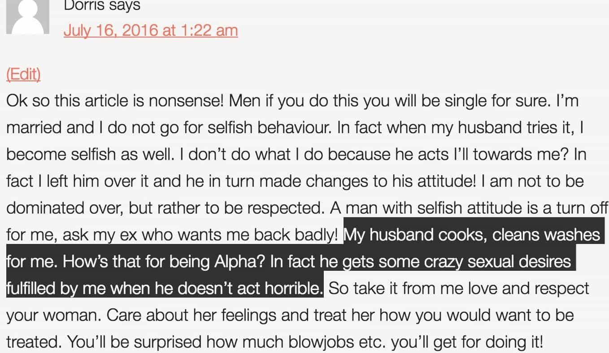

Corey is an iconoclast and the author of 'Man's Fight for Existence'. He believes that the key to life is for men to honour their primal nature. Visit his new website at primalexistence.com


For all the feminist criticism of men supposedly treating women like dogs, it is actually today’s feminism-infected women that are treating men like domesticated animals.
While the majority of women still prefer masculine men for relationships, I’ve been noticing how more and more women today are defying their biology for ideological reasons and are pursuing long-term relationship with men they’re not even attracted to just because they are supplicant and effeminate. If this trend continues unabated, I expect the entire male population to turn into weak and feckless bonobos who grovel around to serve female interests.
Observe the following comparisons to see how men are being turned into dogs for both women and the state:
Dogs as pets are optional. People get a dog only when they want one; it’s not a necessity. Men today are also increasingly becoming an object of utility for a woman rather than a man whom she forms a bond with for a nuclear family. She will marry a man when she wants to (if at all) and she will dump him when she feels like it.
If you want a picture of what the feminists want from men, just imagine a world where all men are male feminists.
Once dogs have a human to call a master, it doesn’t care whether he is a scumbag, loser, criminal, or homeless. Dogs are faithful no matter who their master is and what he does. In fact, they’re so loyal that they’ll even remain with an owner that mistreats them. And that’s exactly what feminists want men to be.
If you observe the rhetoric of the feminists, you’ll notice two general themes: first, the desire to be free from all criticisms. And second, for men to believe them and “support” them no matter what. Feminists want their prospective low-testosterone boyfriends and husbands to fully accept them for who they are no matter how disgusting, slutty, crass, and toxic they are. They want their men to show unconditional loyalty so that they can openly cheat on them and brag about it. And men, if they don’t want to be called a misogynist, must never question their partner’s past or present behavior and remain faithful even if they’re treated like garbage.

Once the owner has secured his dog’s loyalty, he can train it to behave on command. Some owners enjoy the power they have over their companions and they will order their dogs around for fun.
Western women today have discovered that there are truck loads of desperate men who will do just about anything for them to win an ounce of female approval. These women have successfully used men to take them out on expensive dinners (only make fun of them on their blogs afterwards), buy pizza for them for free, shovel snow for them, and so on. The women who order these men around like dogs didn’t even have to train them as they’ve already been conditioned from birth by the society to do what women tells them to do.

Dogs need to be treated to reinforce good behavior; the same is true when you want to domesticate men as second-rate citizens.
Women understand just how desperate the general male population is for affection and sex. Women today are leveraging this power over men to make them behave the way they want them to, rewarding these simps with faked compliments so that they’ll continue being good boys.
One serves a man, the other serves the government and its harem of women.
Besides companionship, the main roles dogs play is to defend their masters. In spite of all the calls for equality, the reality is that women still expect men to defend and save them. The men suffering from white knight syndrome will go as far as sacrificing their own lives to rescue women they don’t even know.
Feminists also don’t mind that many men are serving the police and military force to serve their alpha boyfriend: the government. Women are innately attracted to power and the government is the new protector and provider of women that grows bigger and stronger each day while ordinary men are becoming weaker and irrelevant.
Although men aren’t getting physically neutered the way dogs are, other methods are being employed to psychologically castrate men. This includes the epidemic use of ADHD drugs to tame boys, ridiculous laws aimed at controlling men’s sexual interactions with women, and the overall cultural currents to shame masculinity while promoting all sorts of degeneracy that dilute it. Today’s wives don’t even want to get sexual with their husbands.
“Masculine men are organizing a meeting? They must be rapists!”
When a dog is not owned by a human being, it is considered a pest that needs to be controlled.
Men today who do not submit to the feminist agenda are constantly attacked as being losers, sexists, misogynists, rapists, and so on. In today’s feminist society, you either serve the female imperative or you’re a Neanderthal who is out of touch with the times. Steps are already being made to control every aspect of male behavior in public.
You should also remember that dogs are natural pack animals (think of their cousins, wolves). By being removed from the pack, they become isolated and dependent on their masters. Can you see how the same applies for today’s men?
In addition to being dogs, men are also expected to serve as drones to keep the feminist nanny-state running.
In spite of all the similarities, there are differences that need to be addressed.
First, unlike dogs whose owners house them and feed them, men are not supported by women. Women are free to throw men away like used tampons or divorce their husbands to extract their cash. If anything, men are usually the ones who must provide for their wives.
Second, whereas dogs are under the responsibility of their owners, men are expected to be fully responsible in all their interactions with women. It is the man’s job to ensure that a woman is giving consent even if both parties are drunk; it is men who must watch over their own behavior to ensure that what they say is non-offensive and conforming; and it is men who must ensure that women feel perfectly safe and comfortable in all their interactions. If you so much as walk past a woman in the wrong manner, you’ll be accused of rape. Again, it is the man’s responsibility to ensure that he is acceptable enough to share the same space as women, not the other way around. Feminists want “equality” without accountability.
The domesticated cows we see on farms didn’t end up the way they are now naturally. It was through thousands of years of herding and selective breeding that they became smaller, more passive, and accepting of their conditions. But the fact is, it doesn’t take thousands of years to transform entire species. In this article which I recommend you read, a Soviet project to domesticate foxes have shown that it only takes several generations of selective breeding to transform wild foxes into effeminate and tamed versions of themselves.
The global testosterone level around the world has been mysteriously dropping for the past few decades. While chemical toxins in all the products we consume and come in contact with has been given as one possible explanation, I wouldn’t be surprised to find out that we as species are gradually becoming emasculated at a genetic level through the selective breeding process. In other words, we are becoming socially engineered to be effeminate. It’s not something impossible when you consider that easily tamable beta males, the sperm donors, are usually the males women select as their mates after they themselves are done riding the cock-carousel. I think it’s a factor we should consider besides the emasculation through cultural degeneracy that we’re already familiar with.
Men are supposed to be men unleashing their primal energy through raw adventure instead of getting tamed into submission. I have no doubt that the systematic domestication efforts of today is what is causing collective male nihilism, depression, and frustrated energy. Men who are awake must allow themselves be men.
 If you like this article and are concerned about the future of the Western world, check out Roosh's book Free Speech Isn't Free. It gives an inside look to how the globalist establishment is attempting to marginalize masculine men with a leftist agenda that promotes censorship, feminism, and sterility. It also shares key knowledge and tools that you can use to defend yourself against social justice attacks. Click here to learn more about the book. Your support will help maintain our operation.
If you like this article and are concerned about the future of the Western world, check out Roosh's book Free Speech Isn't Free. It gives an inside look to how the globalist establishment is attempting to marginalize masculine men with a leftist agenda that promotes censorship, feminism, and sterility. It also shares key knowledge and tools that you can use to defend yourself against social justice attacks. Click here to learn more about the book. Your support will help maintain our operation.